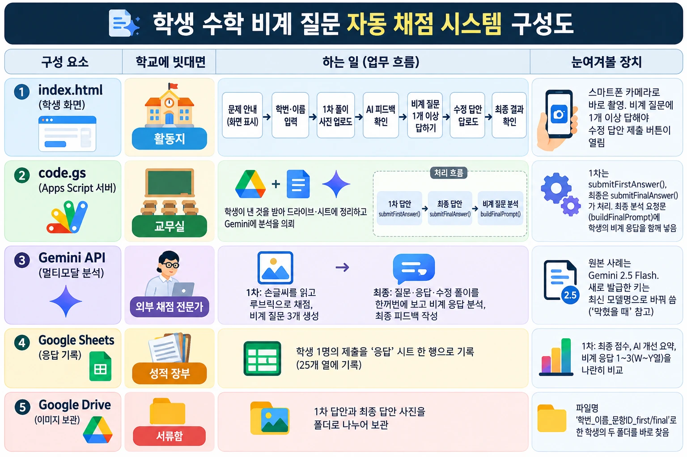
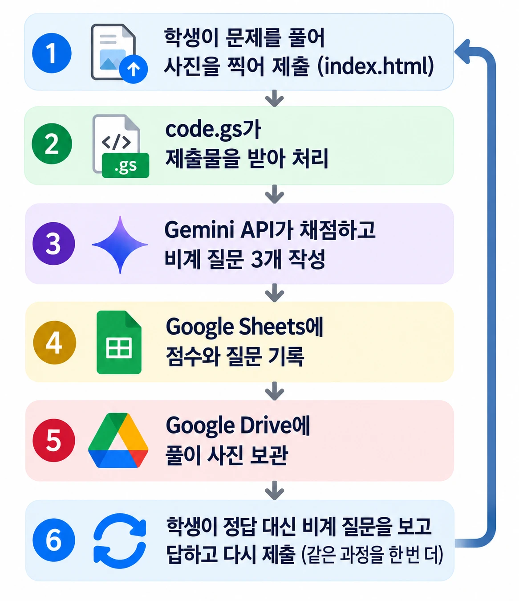

체험을 골라 직접 해 보세요
카드를 누르면 목적·수학적 내용·프로그램 설명과 만드는 방법이 열립니다. 내용은 연구회 구글 시트에서 관리되며, QR로 휴대폰에서 바로 열 수 있습니다.
※ 웹앱은 외부 서비스(Canva·Netlify·Google Apps Script)에서 실행됩니다. 피드백 웹앱의 체험용 비밀번호는 각 작품 설명에 있습니다.
우리는 이렇게 만들었습니다
바이브 코딩은 코드를 직접 짜는 대신, 만들고 싶은 수업 자료를 말로 설명하면 AI가 코드를 써 주는 방식입니다. 네 단계를 반복하면 수업에 쓸 자료가 완성됩니다.
- 1말로 설명원하는 기능을 메타프롬프트로 설명한다
- 2AI가 생성HTML 한 파일, 또는 Code.gs와 Index.html
- 3바로 실행·점검학생 입장에서 조작하며 수학적 오류를 확인
- 4대화로 수정"힌트를 단계별로", "세로 화면에 맞게" 다시 요청
3, 4, 2단계를 반복해 다듬은 뒤 Canva, Netlify, Apps Script로 게시하고 QR로 공유합니다.
1
설계도 그리기: 메타프롬프트로 탐구 자료 만들기
[역할]·[목표]·[대상]·[조건]·[출력] 다섯 칸만 채우면 어떤 단원이든 다시 쓸 수 있는 상위 틀
▾
설계도 그리기: 메타프롬프트로 탐구 자료 만들기
[역할]·[목표]·[대상]·[조건]·[출력] 다섯 칸만 채우면 어떤 단원이든 다시 쓸 수 있는 상위 틀
메타프롬프트는 학생이 무엇을 조작하고, 무엇을 발견하며, 어디서 막히면 어떤 힌트를 받을지를 교사가 설계하는 틀입니다. 복사해서 [ ] 안만 채운 뒤 ChatGPT·Claude·Gemini 등 대화형 AI에 붙여 넣으세요.
작성 예시: 하노이의 탑으로 점화식 발견하기 ([역할]과 [출력]은 위 틀 그대로)
2
설계 다듬기: Canva AI로 '심슨의 역설' 웹앱 고도화
설치 없이 만들고, 조작해 점검하고, 기능을 덧붙여 웹사이트로 게시하는 7단계
▾
설계 다듬기: Canva AI로 '심슨의 역설' 웹앱 고도화
설치 없이 만들고, 조작해 점검하고, 기능을 덧붙여 웹사이트로 게시하는 7단계
설계는 한 번에 끝나지 않습니다. 작게 만들고, 학생 입장에서 조작해 확인하고, 필요한 기능을 덧붙이는 반복이 설계자가 일하는 방식입니다.
| 단계 | 하는 일 |
|---|---|
| 1 코드 기능 열기 | Canva 좌측 사이드바 Canva AI → 입력창 하단 </> 코드 클릭 |
| 2 기본 버전 만들기 | [프롬프트 1] 입력 → 왼쪽 대화창, 오른쪽 실행 결과(버전 1) 생성 |
| 3 직접 조작해 점검 | 버전 1 버튼으로 결과를 열어 수치·계산이 맞는지 확인 |
| 4 기능 덧붙이기 | [프롬프트 2]로 슬라이더·그래프 추가 → 새 버전 자동 생성 |
| 5 최종 다듬기 | [프롬프트 3]으로 시각 효과·반응형 UI 완성 |
| 6 웹사이트로 배포 | 우측 상단 게시 → 사이트 주소 설정 → 게시 |
| 7 링크 공유 | 주소를 복사해 학급 커뮤니티에 공유, 학생 조작 후 상호 피드백 |
다른 단원에 쓸 때는 [상황]과 [화면 구성]만 바꾸면 됩니다. 완성 결과물은 「사례 체험」 탭의 심슨의 역설 웹앱에서 직접 조작해 볼 수 있습니다.
3
피드백 설계하기: AI 비계 질문으로 학생 풀이에 응답하기
간이판(사진 한 장씩 AI에 올리기)에서 확장판(Google Apps Script와 Gemini, 30분이면 우리 학교용 시스템)까지
▾
피드백 설계하기: AI 비계 질문으로 학생 풀이에 응답하기
간이판(사진 한 장씩 AI에 올리기)에서 확장판(Google Apps Script와 Gemini, 30분이면 우리 학교용 시스템)까지
설계자로서의 교사는 정답을 직접 알려 주는 대신, 학생이 오류 지점을 스스로 찾아가도록 질문(비계)의 흐름을 설계합니다. 풀이 속 '숨은 논리적 오류' 찾기는 AI가 돕고, 교사는 1차·2차 풀이 변화를 보며 개입 시점을 판단합니다.
간이판: 오늘 바로 써 보기(학생 풀이 사진은 이름을 가리고 올립니다)
확장판: Google Apps Script와 Gemini
학생이 직접 제출하면 채점·비계 질문·기록이 자동으로 이어집니다. 시스템은 다섯 부분으로 이루어집니다.
시스템 구성도 보기

처리 흐름 보기

| 부분 | 역할 |
|---|---|
| ① Index.html | 학생 화면(문항 선택·사진 업로드·비계 응답) |
| ② Code.gs | 처리 코드(사진 저장, AI 호출, 시트 기록) |
| ③ Gemini API | 풀이 분석·채점·비계 질문 생성 |
| ④ Google Sheets | 학생 1명당 한 행으로 1차·최종 결과 기록 |
| ⑤ Google Drive | 1차·최종 풀이 사진 보관 |
| 단계 | 학생 화면에서 (①) | 화면 뒤에서 (②~⑤) | 남는 기록 |
|---|---|---|---|
| 1 1차 제출 | 학번·이름 입력, 풀이 촬영 업로드 | ②가 사진을 ⑤에 저장하고 ③에 분석 의뢰 | 1차 답안 사진 |
| 2 1차 분석 | 1차 점수와 비계 질문 3개 확인(정답 비공개) | ③이 채점·질문 생성, ②가 ④에 기록 | 1차 점수, 오류 지점, 비계 질문 |
| 3 비계 응답 | 질문마다 자기 생각을 글로 작성 | 응답 1개 이상이어야 다음 단계 버튼 활성화 | 질문 건너뛰기 방지 |
| 4 최종 제출 | 고친 풀이 촬영 업로드 | ②가 수정 사진·비계 응답을 ⑤와 ④에 저장 | 최종 답안 사진, 비계 응답 |
| 5 최종 분석 | 1차 → 최종 점수와 피드백 확인 | ③이 통합 분석, ②가 ④에 기록 | 최종 점수, 개선 요약, 교사 개입 필요 여부 |
직접 만들어 보기: 우리 학교용 시스템 구축
| 단계 | 하는 일 | 확인 |
|---|---|---|
| 1 코드 만들기 | ① 위 프롬프트를 ChatGPT·Claude·Gemini 중 하나에 붙여 넣는다 ② 답변의 Code.gs, Index.html 코드 블록을 각각 복사해 둔다 | 코드 블록 2개 |
| 2 코드 넣기 | ① 새 구글 시트 → [확장 프로그램 → Apps Script] ② Code.gs 기본 내용을 지우고 붙여 넣기 ③ [+ → HTML] 이름 Index → Index.html 붙여 넣고 저장(Ctrl+S) | 왼쪽에 파일 2개 |
| 3 API 키 연결 | ① aistudio.google.com → [Get API key → Create API key] ② Apps Script 톱니(프로젝트 설정) 맨 아래 [스크립트 속성 추가] ③ 속성 GEMINI_API_KEY, 값에 키 저장 | 속성 목록에 키 1줄 |
| 4 실행해 보기 | ① 함수 목록에서 testGemini 선택 → [실행] ② 권한 창: [고급 → 이동 → 허용] ③ 같은 방법으로 setup 실행 | 로그에 200과 '설정 완료', 시트에 '문항'·'응답' 탭 |
| 5 배포하기 | ① [배포 → 새 배포] → 유형 [웹 앱] ② 실행 '나', 액세스 '모든 사용자' → [배포] ③ URL을 휴대폰으로 열어 틀린 풀이를 한 번 제출 ④ 비계 질문이 정답을 흘리지 않는지 확인 후 QR 만들기 | 휴대폰에 문제와 학번 입력 화면 |
- 실행 로그의 빨간 줄을 그대로 복사해 코드를 만든 AI 대화창에 "이 오류 고쳐줘"라고 붙여 넣습니다.
- 404나 503은 모델 이름 문제입니다. 한 단계 이전 flash 모델로 바꿉니다.
- 실행해도 변화가 없으면 doGet 대신 testGemini나 setup을 골랐는지 확인합니다.
- 코드를 고친 뒤에는 [배포 → 배포 관리 → 연필 → 새 버전]으로 다시 배포합니다. [새 배포]는 URL이 바뀝니다.
완성 결과물은 「사례 체험」 탭의 AI 비계 피드백 웹앱에서 학생 화면으로 체험할 수 있습니다.
경기도수학교육연구회 부스에서는
세 가지 체험을 합니다
주제는 AI 시대를 위한 수학교육 현장 실천입니다. 연구회 각 분과가 교실에서 실천한 체험수학과 생성형 AI 활용 수업을 직접 해 보실 수 있습니다.
체험1의 두 연구는 이렇게 이어집니다
하나는 '무엇을 만들었는가(사례)', 다른 하나는 '어떻게 만드는가(방법)'입니다. 둘 다 AI가 학생의 학습을 대신하지 않고 사고를 자극하게 하는 '증강'의 도구로 쓰는 데 초점을 둡니다.
AI활용 Hybrid 체험수학 2.0 및 평가 피드백 자동화 시스템 구축
AI의 도움을 받아 교사가 주도하여 현장에 필요한 디지털 체험 웹앱을 만들고, 학생이 직접 조작하며 개념을 발견하도록 돕는 프로그램. 평가에서는 AI 채점과 교사의 최종 판단을 결합합니다.
원순열 자율주행, 집합 부동산게임, 수학사 퀴즈, 수열의 합 기하적 해석, 합성함수의 극한
상호 설명 및 AI 피드백, 서논술형 자동채점 피드백, 개별 맞춤형 피드백 웹앱
- 흐름: 체험, 설명, 피드백, 수정, 재설계의 순환
- 점검: 자동화의 편의성과 함께 평가의 타당성, 학생의 주도성, 교사의 해석
바이브 코딩과 AI를 활용한 학생 맞춤형 수업
코드를 몰라도 만들고 싶은 수업 자료를 말로 설명하면 AI가 코드를 만들어 주는 '바이브 코딩'으로 꼭 맞는 퀴즈·게임·탐구형 시뮬레이션을 직접 만듭니다.
| 수업 단계 | AI의 역할 | 예시 도구 |
|---|---|---|
| 도입·복습 | 기존 PDF 자료를 퀴즈로 바로 변환 | Kahoot AI |
| 전개·학습 | 추상 개념을 직접 조작하는 탐구형 웹앱 제작 | 대화형 언어모델, Canva AI, GeoGebra |
| 평가·피드백 | 풀이 속 숨은 오류 탐지, 루브릭 채점, 비계 질문 | Snorkl, Clipo, Apps Script + Gemini |
- 실습 순서: 메타프롬프트, Canva AI 고도화, AI 비계 피드백
- 핵심: 도구 사용법보다 '수업 목적에 맞는 AI 활용'과 '교사의 검증·판단'
바이브 코딩, 멀티모달 AI, 동적 수학 도구는 교사의 자리를 대신하지 않습니다. 도구가 코드를 짓고 채점을 돕는 동안, 교사는 학생이 무엇을 조작하고 어디서 막히며 어떤 질문을 받아 스스로 답에 이를지를 설계합니다.
부스 이용 순서
부스에서는 아래 네 단계로 안내합니다. 혼자 둘러보셔도 같은 순서로 따라오시면 됩니다.
QR 스캔
부스 테이블의 QR 또는 이 페이지의 작품 카드를 열어 휴대폰으로 바로 접속합니다.
사례 체험
「사례 체험」 탭에서 원순열·집합 게임·극한 웹앱을 학생처럼 조작해 봅니다.
만드는 방법 보기
「만드는 방법」 탭에서 메타프롬프트, Canva AI, Apps Script로 이어지는 제작 과정을 확인합니다.
내 수업용으로 가져가기
프롬프트를 복사해 내 단원에 맞게 [ ]만 바꿔 바로 만들어 봅니다. 부스에서 함께 해 드립니다.